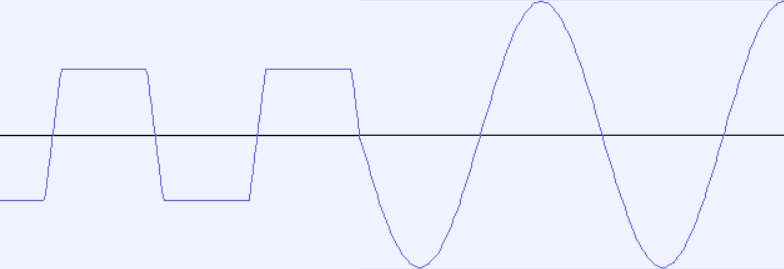
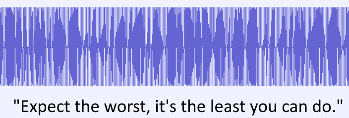
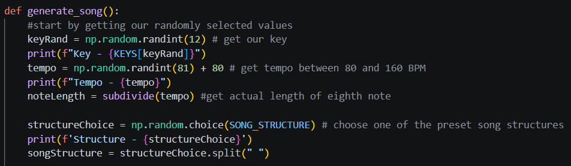

Clipped
An introductory assignment for CS416P - Computers, Sound, and Music. It outputs the audio of a sine wave that has had its max amplitude suddenly cut, and saves it to a file.

Go to ProjectModem
An assignment for CS416P - Computers, Sound, and Music. It's a demodulator program that recreates the Bell 103 protocol and is able to parse specially formatted sounds and return a text output.

Go to ProjectAleatoric
An assignment for CS416P - Computers, Sound, and Music. It's a program that generates a song's melody based on a handful of several random parameters including its key, tempo, overall structure, and chord progressions.

Go to Project